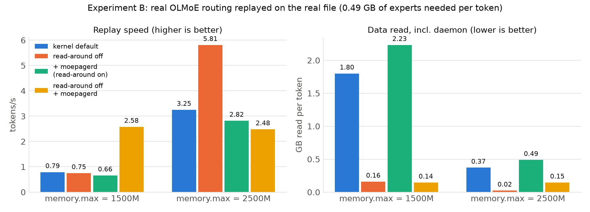
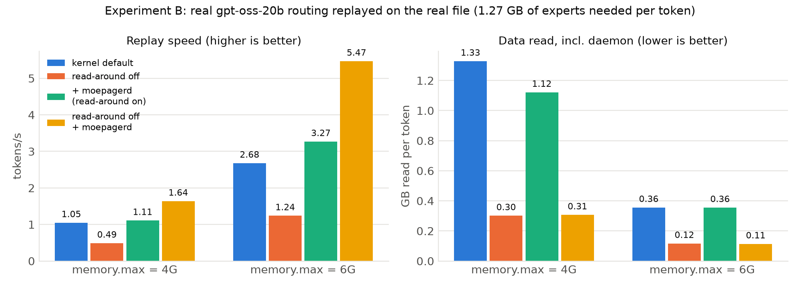

Formal title: System and Method for Non-Invasive, Expert-Aware Page-Cache Management for Mixture-of-Experts Model Inference on Memory-Constrained Linux Hosts
Repository: https://github.com/shreshth006/moepager · team fork:
https://github.com/AyushSinha2210/moepager (branch ayush)
Mixture-of-Experts (MoE) language models activate only a few "expert"
sub-networks per layer for each token: 8 of 64 in OLMoE-1B-7B, 4 of 32 in
gpt-oss-20b, 8 of 128 in Qwen3-30B-A3B. That makes them attractive for
consumer machines, which run them with llama.cpp in mmap mode when the
model is larger than free RAM, leaving the Linux page cache to decide
which weights stay in memory.
We show that the kernel's generic behaviour fits this workload poorly:
We present moepager, a Rust toolchain and an unprivileged user-space daemon that manage the shared page cache at the granularity of (layer, expert) units, without changing the inference engine's code or binary:
mincore().posix_fadvise(WILLNEED) of the expert's remaining slices in 128 KiB
chunks. The chunking is necessary because the kernel silently truncates
larger requests.LD_PRELOAD shim turns off fault read-around on the model
mapping, which no stock llama.cpp option does on single-node machines.The evaluation toolchain records ground-truth routing from llama.cpp, computes exact LRU miss-ratio curves, simulates policies against a Belady optimum, and runs llama.cpp under cgroup memory limits.
On a 15 GB laptop running OLMoE-1B-7B (4.2 GB) under memory limits of 1.5 GB and 2.5 GB, moepager's configuration decoded 1.40 and 3.21 tokens/s, versus 0.35 and 0.87 tokens/s for the same engine served by the default page cache. That is 3.7–4.0× faster, with 7–8× less SSD traffic and memory-pressure stall reduced from 12.7 % to 1.0 %. Default llama.cpp, by contrast, was OOM-killed at both limits unless allowed to spill 2.3–2.5 GB into compressed RAM swap. On a second model, gpt-oss-20b (12.1 GB), replaying real routing under 4 GB and 6 GB limits showed the same pattern: 1.6–2.0× faster than the kernel default, with 3–4× less data read.
We also report what did not work: a value-based pinning policy captured little of the optimal policy's 34–74 % miss reduction, and completion readahead without turning off read-around made performance worse.
moepager is a user-space control loop around the Linux page cache. It sits beside an unmodified inference engine, observes the engine only through the page cache they share, and acts only through standard kernel interfaces. Figure 1 shows the whole system; the subsections below define its structure, components, interfaces, data model, runtime behaviour, process and privilege model, and the design decisions behind them.
Figure 1. moepager architecture (source: docs/report/architecture-portrait.dot; a landscape version is architecture.png).
Action values, and never calls the kernel. All
operating-system effects sit behind two traits (PageCacheOps,
ResidencyProbe), with a Linux implementation and a mock one. This lets
the same policy run in the simulator, in tests and in the daemon.mp-core is linked both into
the trace-driven simulator (mp-sim) and into the live daemon
(moepagerd), so a policy evaluated offline is exactly the policy
deployed (ADR 0001).LD_PRELOAD shim that adds one madvise call after mmap.The crate layers, from Cargo dependencies (each layer uses only layers below it):
L4 Front ends moepager (CLI: gguf-map, synth, analyze, sim, record, replay, fault-io, …)
moepagerd (daemon)
L3 Evaluation mp-sim (simulator) mp-analyze (reuse, MRC) mp-synth (synthetic traces)
L2 Policy core mp-core: OnlineStats, CostModel, ResidencyEngine, Prefetcher -> Action
L1 Adapters mp-gguf (file format) mp-recorder (observation) mp-os (kernel calls)
L0 Data mp-trace (.mpt trace format, ExpertEvent)
----------------------------------------------------------------------------------------
Linux 6.x: page cache, mincore, posix_fadvise, madvise, mlock, process_madvise,
cgroup v2, PSI
| Component | Language / size | Responsibility | Needs privilege |
|---|---|---|---|
mp-gguf |
Rust | Parse the GGUF header; build the expert map (units, slices, sentinels, page→unit index); report which tensors llama.cpp would repack | no |
mp-trace |
Rust | .mpt binary trace format; CSV import; token inference from layer order |
no |
mp-os |
Rust | Kernel interfaces: mincore, cachestat, chunked WILLNEED, MADV_POPULATE_READ worker, mlock, process_madvise; /proc parsing (maps, smaps VmFlags, cgroup) |
only for pin / demote |
mp-recorder |
Rust | Observation: sentinel polling, full residency scans, bpftrace event conversion, trace replay on a real file | bpftrace only |
mp-core |
Rust | Online statistics (decayed miss rates, layer transitions), cost model, V(e) residency planner, completion and predictive prefetch → Actions |
no |
mp-sim |
Rust | Byte-capacity cache simulator with an I/O channel; evictors LRU, LFU, Belady*; controllers wrapping mp-core |
no |
mp-analyze |
Rust | Reuse distances (Fenwick tree), exact LRU miss-ratio curve, locality statistics | no |
moepagerd |
Rust | The daemon: event source → mp-core → PageCacheOps; start-up checks (read-around, cgroup, memlock limit) |
optional |
moepager |
Rust | CLI front end for all offline and evaluation tasks | no |
libmoepager_preload.so |
C, 64 lines | LD_PRELOAD shim: MADV_RANDOM on read-only shared *.gguf mappings |
no |
moe_trace |
C++, 169 lines | Experiment only: records ground-truth routing from llama.cpp's eval callback | no |
bench/ |
Bash | Experiments A–D under cgroup v2 memory walls; metric snapshots | no (user systemd scope) |
python/moepager_tools |
Python | Result collection, report figures | no |
| llama.cpp [1] | external, unmodified | The inference engine; maps the model with mmap |
no |
The boundaries between layers are four Rust traits and one value type:
/// mp-os: actuators on byte ranges of the model file (LinuxOps, MockOps).
pub trait PageCacheOps {
fn prefetch(&mut self, offset: u64, len: u64) -> io::Result<()>; // async readahead
fn pin(&mut self, offset: u64, len: u64) -> io::Result<()>; // resident + unevictable
fn unpin(&mut self, offset: u64, len: u64) -> io::Result<()>;
fn demote(&mut self, offset: u64, len: u64) -> io::Result<()>; // evict first
}
/// mp-os: residency queries (MappedFile via mincore, MockOps).
pub trait ResidencyProbe {
fn resident(&self, first: u64, n: u64, out: &mut Vec<bool>) -> io::Result<()>;
fn page_size(&self) -> u64;
}
/// moepagerd: where observations come from (SentinelSource, TraceSource).
pub trait EventSource {
fn poll(&mut self) -> io::Result<Option<Vec<ExpertEvent>>>;
}
/// mp-core -> OS layer or simulated cache; units are dense ids l*E + e.
pub enum Action { Pin(u32), Unpin(u32), Prefetch(u32), Demote(u32) }
/// mp-sim: policy hooks driven by the simulator (StaticPin, VControl, ...).
pub trait Controller {
fn on_access(&mut self, layer: u16, expert: u16, unit: u32, hit: bool, t_ns: u64);
fn after_layer(&mut self, layer: u16, view: &View) -> Vec<Action>;
fn end_token(&mut self, view: &View) -> Vec<Action>;
}
PageCacheOps (Daemon<O: PageCacheOps>);
--ops mock only logs actions, --ops linux executes them.Action names a unit; the daemon expands it into the unit's slice
byte ranges using the expert map, so policy code never sees offsets.hit = true calls themselves, which is how the miss-only
regime is evaluated./proc files listed under mp-os [3]; cgroup v2
control files [4]; the .mpt trace format
(docs/TRACE_FORMAT.md); the expert map as JSON (map.json).| Entity | Fields | Notes |
|---|---|---|
ExpertMap |
arch, page size, data offset, file size, n_layers L, n_experts E, top-k, units, dense, warnings |
built once per file; serialisable as JSON |
Unit |
layer l, expert e, bytes s_u, slices |
dense id u = l·E + e; 1,024 units for OLMoE, 6,144 for Qwen3-30B-A3B |
Slice |
kind (up, gate, down, gate_up, *_bias), tensor name, absolute offset, length |
32-byte aligned, so a page may belong to two units |
DenseRegion |
name, layer, offset, length | attention, norms, embeddings: everything that is not an expert |
| Sentinel | page index, (l, e), reliable flag | middle page of a weight slice, ≥ 128 KiB from its edges |
PageIndex |
sorted intervals + prefix-max of ends | page → Owner::Expert{unit, slice} or Owner::Dense{region} |
ExpertEvent |
t_ns u64, token u32, layer u16, expert u16 |
16-byte .mpt record; "used" (full) or "missed" (miss-only) |
.mpt file |
magic MPTRACE\0, version, record kind, JSON header (model, observation regime, units), fixed-size records |
expert records (16 B) or page records (24 B) |
OnlineStats |
decayed counts and exposures per unit, layer-transition rows, layer time | the daemon's only state besides the pinned set |
For each decoded token, with the recommended configuration (engine with
-nr and the shim; daemon with --policy v --budget-mb 0):
MADV_RANDOM, each fault reads only the faulting page.SentinelSource
reports the flip as an ExpertEvent for (l, e).moepagerd updates OnlineStats and infers token boundaries from the
layer order.Action::Prefetch(u). LinuxOps issues
posix_fadvise(WILLNEED) for every slice of u in 128 KiB chunks, and
the kernel starts large asynchronous reads.Pin / Unpin / Demote actions,
which become mlock / munlock / process_madvise(MADV_COLD).memory.max, the kernel's reclaim (MGLRU [5])
evicts unpinned pages as usual; the daemon never evicts by itself
unless demotion is enabled.Offline, mp-gguf produces the map used in steps 2–5. For evaluation,
moe_trace replaces steps 2–3 with exact router output, and mp-sim
replaces steps 1, 6 and 8 with a model of the cache and the I/O device.
| Process | Runs | Maps the model | Privilege |
|---|---|---|---|
Engine (llama-cli, llama-bench, …) |
unmodified binary, optionally LD_PRELOAD shim |
MAP_SHARED, PROT_READ, whole file |
none |
moepagerd |
separate process, same user | MAP_SHARED, PROT_READ, whole file (for mincore and mlock) |
none for observation and prefetch; CAP_IPC_LOCK for pinning; CAP_SYS_NICE for demotion of the engine's pages |
memory.max limit [4]. Page-cache pages are charged to the
cgroup of the task that brought them in, so co-location makes the
daemon's prefetches count against the same budget as the engine's
faults (ADR 0008). The daemon warns when it is not in the engine's
cgroup.--pid): the engine's mapping must carry the rr
(random-read) VmFlag in /proc/<pid>/smaps, otherwise read-around is
still on; the memlock limit is compared with the pin budget.| ADR | Decision | Reason |
|---|---|---|
| 0001 | Policy core in Rust, shared by simulator and daemon | what is simulated is what runs |
| 0002 | Treat black-box observation as miss-only | hits are served by the MMU and are invisible to user space |
| 0003 | Residency via mlock pin + MADV_COLD demote, not fadvise(DONTNEED) |
DONTNEED does not drop pages another process maps |
| 0004 | Measure (go/no-go, kill criteria) before building the live daemon | avoid optimising a cost that does not exist |
| 0005 | 128 KiB guard distance for sentinel pages | a neighbour's read-around must not trigger a sentinel |
| 0006 | Chunk WILLNEED into 128 KiB requests |
the kernel silently truncates larger requests |
| 0007 | Require --no-repack / -nr for llama.cpp |
repacked weights live in anonymous memory, outside the page cache |
| 0008 | Run daemon and engine in one cgroup | fair accounting of prefetched pages |
| 0009 | Two-tier observation: unprivileged sentinels, optional bpftrace | works without root; exact events when root is available |
| 0010 | Token boundaries from layer regression with a slack | the engine exposes no token signal |
| 0011 | Optional LD_PRELOAD shim to turn off read-around |
no stock llama.cpp option does it on single-node machines |
Mixture-of-Experts (MoE) language models [6, 7] replace each dense feed-forward block with many smaller "expert" networks plus a router. For every token, the router picks a few experts per layer (top-k), so only a small fraction of the parameters is used per token. In the three models studied here, OLMoE [8], gpt-oss [9] and Qwen3 [10] (values read from the real model file headers [11]):
| Model | File (quantisation) | Size | Layers × experts | top-k | Expert share of file |
|---|---|---|---|---|---|
| OLMoE-1B-7B-0924 | Q4_K_M | 4.21 GB | 16 × 64 | 8 | 92.6 % |
| gpt-oss-20b | MXFP4 | 12.11 GB | 24 × 32 | 4 | 84.1 % |
| Qwen3-30B-A3B | Q4_K_M | 18.56 GB | 48 × 128 | 8 | 94.6 % |
Because only 4–8 experts per layer are touched per token, MoE models are an
attractive fit for consumer machines. A common way to run a model larger
than free RAM is llama.cpp [1] in mmap mode: the model file is mapped into
memory, and the Linux page cache loads weights on demand and evicts them
under memory pressure.
The kernel's page cache is generic. Its reclaim policy (MGLRU [5]) and its fault read-around [12] know nothing about how a GGUF file [2] is laid out or how MoE routing behaves. Our measurements on a 15 GB laptop (Section 6) show three concrete problems:
ffn_up_exps, ffn_gate_exps,
ffn_down_exps), hundreds of megabytes apart. The kernel cannot know
these three ranges belong together.A further, practical problem: llama.cpp on x86 CPUs with AVX2 by default repacks the most common quantised expert weights into ordinary (anonymous) memory. That is 77 % of the expert bytes for OLMoE and Qwen3 Q4_K_M, and 100 % for gpt-oss MXFP4. Under memory pressure those pages go to swap instead of the page cache.
Goal: make MoE inference faster on memory-constrained Linux machines, using knowledge of the model file's structure and of routing behaviour, without modifying the inference engine and without copying the weights.
MoE offloading inside the inference engine. Most systems that keep only part of an MoE model in fast memory are built into the engine, where the router's decisions are directly visible:
Inside llama.cpp itself there are several open proposals [19]: PR #25294 (O_DIRECT expert streaming that bypasses the page cache), PR #26824 (expert heat map and mmap pinning), PR #29887, issue #20757 and discussion #27149. All of these modify the engine.
Using the OS page cache as the expert tier. Si et al. [20] is
the closest study. On a datacenter GH200 node they
show that kernel recency (LRU) serves about as much demand as an oracle
static-frequency pin, that Belady's bound [21] leaves about one third of LRU's
misses addressable, and that fadvise(WILLNEED) prefetch hints gained only
0.3–5 %. Their engine reads with pread, so mmap fault behaviour and file
structure play no role.
Operating-system mechanisms.
Gap. We found no system that manages the page cache for an unmodified engine using the model file's structure, and none that measures the effect of mmap fault read-around on MoE experts.
This section defines the problem formally (4.1), then describes each algorithm in the order data flows through the system: the expert map (4.2), black-box observation (4.3), read-around suppression (4.4), expert-completion readahead (4.5), the optional residency policy (4.6) and the offline evaluation algorithms (4.7). Sections 4.8–4.10 give the experimental protocol, the metric definitions and the threats to validity. Every algorithm below corresponds to code in the repository; the crate is named in each heading.
| Symbol | Meaning |
|---|---|
| F, P | the GGUF model file; the page size (4 KiB on the test machine) |
| L, E, k | number of MoE layers, experts per layer, experts chosen per token per layer (top-k) |
| u = (l, e) | an expert unit: expert e of layer l; U is the set of all L·E units |
| S(u) | the slices of u: one byte range [a, b) of F per expert tensor (up, gate, down, optional bias rows) |
| s_u | size of unit u in bytes, Σ over S(u) of (b − a) |
| R_{t,l} | the k experts the router selects at decode step (token) t, layer l |
| σ | an access trace: the sequence of units R_{1,1}, R_{1,2}, …, R_{T,L} |
| C | the memory budget: cgroup v2 memory.max [4] |
| B_d, B_b | delivered bandwidth of fault-driven reads and of bulk readahead |
| t_f | fixed cost of one demand miss (fault entry plus first I/O latency) |
Decoding token t touches, layer by layer, every unit in R_{t,l} plus the dense (non-expert) tensors of layer l. The engine maps F read-only and shared, so every touched byte is served from the page cache, which holds at most C bytes (minus the engine's anonymous memory). A unit access is a hit if all its pages are resident and a miss otherwise.
The quantity to minimise is decode time per token. Under memory pressure it is dominated by I/O stall, which a simple cost model captures:
stall(miss of u) = t_f + s_u / B_d (kernel default)
stall(miss of u) = t_f + t_detect + s_u / B_b (with completion readahead)
Two levers follow directly. Residency (which units stay cached)
reduces the number of misses. Read path (how a missing unit is read)
reduces the cost of each one. The original hypothesis was that residency
is the main lever; Section 6 shows that on an mmap engine the read path
dominates, because B_d is small and the kernel's read-around inflates the
bytes read per miss.
mp-gguf)A GGUF file [2] starts with a header listing every tensor's name,
shape, ggml type and data offset. mp-gguf parses only this header, so a
truncated prefix of the file is enough. For each tensor named
blk.<l>.ffn_{up,gate,down,gate_up}_exps.weight with shape
[ne0, ne1, E], the expert index is the outermost (slowest-varying)
dimension, so each expert's weights are contiguous inside the tensor:
Algorithm 1 BuildExpertMap(header)
for each tensor T matching blk.<l>.ffn_*_exps.*:
bytes := type_size(T.type) * (ne0 * ne1 * E) / block_size(T.type)
stride := bytes / E # warn if E does not divide bytes
for e in 0 .. E-1:
add slice [T.offset + e*stride, T.offset + (e+1)*stride) to unit (l, e)
for each 2-D per-expert tensor ([ne0, E], e.g. *_exps.bias):
add one row per expert to unit (l, e)
sort all slices by offset; build page->unit interval index (below)
for each slice: choose a sentinel page (Section 4.3)
mp-gguf also reports which expert tensors
llama.cpp's CPU backend would repack into anonymous memory, based on
the quantisation type and the repack rules in the engine source
[1]. On AVX2 this covers 77 % (Q4_K_M) to 100 % (MXFP4) of the
expert bytes, so the engine must run with --repack 0 / -nr for the
weights to stay in the page cache.mp-recorder)The engine is a black box: the daemon cannot see router decisions. It infers them from the page cache, which is shared.
Sentinel choice. For each slice, one page in its middle is chosen as
the sentinel, at least 128 KiB (SENTINEL_GUARD) from either edge of
the slice. A fault in a neighbouring slice brings in a read-around window
around the faulting page; with the default 128 KiB window, that window
cannot reach this sentinel. Slices shorter than 2 × 128 KiB + 2P are marked
unreliable, and bias rows (a few KiB, inside other tensors' pages) get no
sentinel. On btrfs the window is 4 MiB, larger than a whole OLMoE slice,
which is why read-around must be turned off (Section 4.4) for observation
to be correct as well as fast.
Polling. The daemon maps F read-only (MAP_SHARED, PROT_READ) and
calls mincore(2) [3] on the sentinel pages. This needs no
privilege and works for files the daemon does not own. (cachestat(2)
would need write access to the file.)
Algorithm 2 SentinelTick(sentinels, prev, now_ns) # every Δ = 300 µs
events := []
for i, s in enumerate(sentinels):
r := mincore(s.page)
if r and not prev[i] and (s.layer, s.expert) not in events:
events.append((now_ns, s.layer, s.expert)) # a miss of unit (l, e)
prev[i] := r
return events
mincore call per sentinel per sweep: O(3·L·E) system
calls every Δ. The poll period Δ bounds detection latency to at most Δ
plus the remaining sweep time.filemap:mm_filemap_add_to_page_cache tracepoint; a
bpftrace script is included (ADR 0009). It was not used for the results.Token boundaries are not visible either. Within one decode step layers are visited in increasing order, so a new token is inferred when an event's layer falls more than a slack (default 2 layers) below the highest layer seen in the current step:
Algorithm 3 InferToken(event) # ADR 0010
if max_layer is set and event.layer + slack < max_layer:
end_token() # closes statistics, may trigger re-plan
max_layer := max(max_layer, event.layer)
The slack absorbs reordering when several layers are discovered in the same sweep. On ground-truth traces this recovers the true token count; on miss-only traces a token whose misses are all in high layers can merge with the previous one, which only affects the V(e) rate estimates.
tools/preload)On a page fault in a file mapping, Linux reads a window of pages around
the faulting address ("read-around"), sized from the backing device's
read_ahead_kb (4 MiB for this machine's btrfs). For a 1–1.3 MB expert
slice, most of that window is neighbouring experts that will not be used.
The waste has two effects: up to 3.7–4.8× more SSD traffic than needed,
and a cache filled with unused pages, which raises the miss ratio.
Setting MADV_RANDOM on the mapping (VM_RAND_READ in the kernel)
disables read-around for it, so a fault reads exactly the faulting page.
Stock llama.cpp applies this only when --numa is set on a multi-node
machine. A 64-line LD_PRELOAD shim wraps mmap() and, for read-only
shared mappings of *.gguf files, calls madvise(addr, len, MADV_RANDOM)
after the original mmap returns (ADR 0011). The engine's code and binary
are unchanged. The daemon verifies the effect by checking for the rr
flag in the engine's /proc/<pid>/smaps VmFlags and warns if it is
missing.
Turning read-around off alone trades one problem for another: each miss becomes hundreds of synchronous 4 KiB faults (39,000 per token in Experiment B). Completion readahead (next section) turns them back into bulk reads, but only for the unit that was actually chosen.
moepagerd, mp-os)When a miss of unit u is observed, the daemon immediately asks the kernel
to read all of u asynchronously. The engine is typically still inside
the first slice (up); the gate and down slices, hundreds of
megabytes away in the file, arrive as large reads instead of thousands of
small faults.
Algorithm 4 OnMiss(u) # mp-core::prefetch
for each slice [a, b) in S(u):
for c in a, a+128K, a+256K, ... < b: # chunked (ADR 0006)
posix_fadvise(fd, c, min(128K, b - c), POSIX_FADV_WILLNEED)
stats.observe(u, MISS)
WILLNEED is silently truncated by
force_page_cache_ra() in mm/readahead.c [12] to
max(io_pages, ra_pages) pages, so a 1 MiB request populated only
256 KiB in our tests. Issuing 128 KiB chunks makes every byte requested
actually read.WILLNEED queues reads and returns, so the daemon never
blocks on I/O. The alternative MADV_POPULATE_READ
(--prefetch-mode populate) is synchronous and runs on a worker thread;
it is for devices where readahead is disabled and WILLNEED has no
effect.--predict) exists but is not
recommended (Section 6).mp-core; optional, needs privilege)With CAP_IPC_LOCK (or a raised RLIMIT_MEMLOCK), the daemon can pin
units with mlock through its own shared mapping, which pins the same
page-cache folios the engine reads. The policy chooses a pinned set
within a pin budget C_pin ≤ C by value per byte:
V(u) = rate(u) · (t_f + s_u / B_d) / s_u
that is, the expected stall avoided per token per byte held. This is a fractional-knapsack relaxation; the greedy order is optimal for the relaxation and near-optimal when units are small compared with C_pin.
Rate estimator under miss-only observation. A pinned unit produces no misses, so naive miss counts would make every pinned unit look cold. rate(u) is instead defined as the miss rate per token while unpinned:
rate(u) = (Σ_t w_t · miss_t(u) + p·k) / (Σ_{t: u unpinned at t} w_t + k)
Algorithm 5 Replan(stats, cost) # every 4 tokens (replan_every)
excluded := random 2 % of pinned units # exploration, miss-only only
cand := [(V(u) * (1.25 if pinned[u] else 1), u) for u not excluded, V(u) > 0]
sort cand by value descending # hysteresis factor 1.25
want := {}; used := 0
for (v, u) in cand:
if used + s_u <= C_pin: want += u; used += s_u
emit Unpin(u) [+ Demote(u)] for u pinned and not in want # unpins first,
emit Pin(u) for u in want and not pinned # so C_pin holds
process_madvise(pidfd, MADV_COLD) on the engine's mapping (needs
CAP_SYS_NICE). posix_fadvise(DONTNEED) was rejected because it does
not drop pages that another process has mapped (verified on Linux 6.19;
ADR 0003).The policy code is one Rust implementation used by both the simulator and the daemon (ADR 0001), so simulated and live behaviour cannot drift apart.
mp-sim, mp-analyze)Trace-driven simulation. mp-sim replays a trace σ against a cache of
C bytes:
t_f + s/B_d, or t_f + t_detect + s/B_b with completion readahead;Policies compared: LRU (a stand-in for the kernel's MGLRU [5]), LFU, prefix pinning, an oracle static-frequency pin, V(e) with full or miss-only observation, predictive prefetch, and Belady*.
Belady* evicts the cached unit whose next use is furthest in the future [21]. For equal sizes this is optimal (MIN). With variable sizes exact optimality is NP-hard, so the same rule is used as the standard heuristic and labelled with an asterisk. Implementation: for each unit, the sorted list of its positions in σ; the next use after position i is found by binary search; cached units are kept in an ordered set keyed by next use, so each access costs O(log N).
Exact LRU miss-ratio curve. mp-analyze computes, independently of
the simulator, the miss ratio of a byte-capacity LRU cache at every
capacity in one pass, using stack-distance analysis [27] with a
Fenwick tree [28]:
Algorithm 6 ByteReuseDistances(σ)
fenwick := zeros(N) # one slot per trace position
for i, u in enumerate(σ):
if last[u] exists:
D_i := fenwick.sum(last[u]+1 .. i-1) # bytes of distinct units since last use
fenwick.add(last[u], -s_u)
else:
D_i := infinity # cold miss
fenwick.add(i, +s_u); last[u] := i
# access i hits in LRU of capacity C <=> D_i + s_u <= C
MRC(C) := |{ i : D_i + s_u > C }| / N # sort thresholds once, O(N log N)
Each position holds the size of the unit whose latest access is there, so a range sum counts each distinct unit once. The whole curve costs O(N log N). The simulator's LRU agrees with this curve exactly at every tested capacity; this cross-check between two independent implementations is a regression test.
Hypotheses and kill criteria. The project was run as a go/no-go experiment (ADR 0004) with criteria fixed before measuring (IDEA_REVIEW §6):
Experiments.
| Question | Independent variables | Measured | |
|---|---|---|---|
| A | How local and predictable is real routing; how much could any policy gain? | prompt domain (chat, code, prose); cache size 15–70 % of expert bytes; policy | reuse, concentration, next-layer recall; miss ratio per policy |
| B | What does the real kernel do with this access pattern? | memory budget (1.5, 2.5 GB); read-around on/off; daemon on/off | tokens/s, SSD bytes/token, major faults/token |
| C | How fast are fault-driven vs bulk reads of expert units? | read method (fault, WILLNEED one call, WILLNEED 128 KiB chunks, pread 1 MiB) | GB/s delivered, read amplification |
| D | Does it help a real engine end to end? | budget; configuration B0, B0S, B2, D2, P, PD | decode tokens/s, SSD bytes/token, faults/token, memory PSI |
moe_trace, a 170-line experiment-only program,
records the router's choices through llama.cpp's scheduler eval
callback by reading the ffn_moe_topk-<l> tensors row by row. Three
prompts × 255 decode tokens give 32,640 unit uses per prompt for OLMoE
(255 × 16 layers × top-8). The traces are then analysed
(4.7) and simulated at seven capacities.moepager replay touches, for each token of
the prose trace, every page of every chosen unit through mmap with 4
threads (64 KiB chunks interleaved). It isolates the kernel's paging
behaviour from the engine's compute.llama-bench -p 0 -n 32 -r 3 -t 8 -lm mmap
[1]. Configurations: B0 default (repacking, zram swap allowed);
B0S default without swap; B2 --repack 0; D2 B2 + moepagerd; P B2 +
read-around off (shim); PD P + moepagerd.Controls applied to every run:
posix_fadvise(DONTNEED) while no process maps it, followed by sync
and a 5 s settle.systemd-run --user --scope -p MemoryMax=C -p MemorySwapMax=0)
[4]. Swap is allowed only for B0 (MemorySwapMax=infinity).
Daemon and engine share the scope.nproc − 4).read_ahead_kb, MGLRU state and the llama.cpp commit
are saved with each result set (env.txt).| Metric | Definition | Source |
|---|---|---|
| tokens/s (D) | llama-bench tg mean ± standard deviation over repetitions |
llama-bench output |
| tokens/s (B) | replayed tokens ÷ wall time | replay tool |
| SSD bytes / token (D) | (sectors read on the model's block device after − before) × 512 ÷ tokens; tokens = n_gen × reps + 1 (warm-up) | /proc/diskstats |
| Data read / token (B) | (pgsteal × 4 KiB + file at exit) ÷ tokens: page-cache inflow charged to the run's cgroup, including the daemon's reads |
cgroup memory.stat |
| Major faults / token | D: pgmajfault of the cgroup ÷ tokens; B: the replayer's ru_majflt ÷ tokens |
cgroup memory.stat, getrusage |
| Memory PSI | some avg10 of the cgroup's memory.pressure at exit: share of the last 10 s in which at least one task stalled on memory [29] |
cgroup |
| Read amplification | bytes read from storage ÷ expert bytes needed | C: /proc/self/io (single process, no daemon) |
| Miss ratio | misses ÷ unit accesses | simulator, MRC |
| Belady* saving | 1 − misses(Belady*) ÷ misses(LRU) at equal capacity | simulator |
| Next-layer recall | share of R_{t,l+1} contained in a size-k prediction made after layer l | mp-analyze |
Only measured numbers are reported. Where a configuration did not finish (OOM kill, timeout), it is reported as such, never as zero or extrapolated.
/home is btrfs with zstd compression, so device bytes can be lower
than logical bytes. Quantised weights compress poorly, and the
comparisons are between configurations on the same file./proc/self/io) do not include reads
issued by another process. B's traffic is therefore taken from the
cgroup (4.9); an earlier draft used the replayer's own counter and
understated the daemon variants by 0.1–0.6 GB/token.| Layer | Choice | Why |
|---|---|---|
| Core, simulator, daemon, CLI | Rust (stable), 10 crates, ≈ 8,900 lines | Predictable latency for a daemon; fast enough for simulation sweeps; one language, so the daemon and the simulator share the same policy code |
| OS interface | libc syscalls behind traits (PageCacheOps, ResidencyProbe) |
Real Linux implementation + MockOps for deterministic tests |
| Ground-truth capture | C++ against libllama (tools/moe_trace, 169 lines) |
Needs the engine's eval callback; experiment-only |
| Read-around shim | C, LD_PRELOAD (tools/preload, 64 lines) |
Disables fault read-around on the model mapping without touching the engine's code or binary |
| Privileged tracing | bpftrace script (26 lines) | Optional, root only |
| Fixtures, metric parsing, probes | Python (stdlib + pytest), 674 lines | Independent GGUF writer so parser tests aren't self-confirming |
| Experiments | Bash + cgroup v2 (systemd-run --user), no root |
Fixed memory budget per run |
| CI | GitHub Actions: fmt, clippy -D warnings, tests, ruff, pytest, demo smoke run |
| Crate | Responsibility |
|---|---|
mp-gguf |
GGUF v2/v3 header parser, ggml type table, ExpertMap, page index, sentinels, repack-risk detection |
mp-trace |
.mpt binary trace format (spec in docs/TRACE_FORMAT.md), CSV import/export, token inference |
mp-core |
Deterministic RNG, cost model, OnlineStats (miss-only), ResidencyEngine (V(e)), PrefetchPlanner |
mp-synth |
Synthetic routing generator (skew, reuse, cross-layer affinity, drift) |
mp-analyze |
Fenwick-tree reuse distance, exact LRU miss-ratio curve, routing predictability, timing |
mp-sim |
Trace-driven cache + I/O-channel simulator, policies, Belady* |
mp-os |
mincore, cachestat, chunked fadvise, mlock, process_madvise, /proc/pid/maps/smaps parsing |
mp-recorder |
Sentinel and full-scan recorders, page→expert conversion, bpftrace ingest, mmap/pread trace replayer |
moepager |
CLI: gguf-map, synth, analyze, sim, import-csv, trace-csv, record, ingest-bpftrace, page2expert, replay, fault-io |
moepagerd |
Daemon: policies none, willneed-all, lru-pin, v; sources sentinel / trace:; ops linux / mock |
| Feature | Status |
|---|---|
| GGUF expert map, verified on 3 real models | done, tested |
| Ground-truth routing capture + import | done, used on OLMoE |
| Trace analysis, simulator, Belady bound | done, tested, used |
| Unprivileged sentinel observation | done, tested end to end on real files |
| Chunked completion readahead | done, measured (Section 6) |
| Read-around shim | done, measured (Section 6) |
| V(e) pinning | implemented and unit-tested; live use needs CAP_IPC_LOCK (default memlock limit is 8 MB), not measured |
MADV_COLD demotion |
implemented; needs CAP_SYS_NICE, not measured |
| eBPF observation | script + ingest written; needs root, not run |
| Start-up checks: read-around still on, daemon outside the engine's cgroup | done, tested live |
MADV_POPULATE_READ prefetch fallback (--prefetch-mode populate) |
done, tested on a real file; not benchmarked |
| PSI-driven budget control, dashboard | future work |
mincore/cachestat/fadvise/mlock semantics
on a real file;stat() and /proc/pid/maps;make demo runs the full pipeline with no model or root. It parses the
real Qwen3 map, generates routing, analyzes it, simulates policies, does a
daemon dry run, and records a replayed trace black-box. With a model,
bench/phase7.sh runs experiments A–D. Terminal screenshots of the tools
on the real OLMoE model follow.
 Figure 2. Expert map from the real GGUF header, with the repack warning for this AVX2 CPU.
Figure 2. Expert map from the real GGUF header, with the repack warning for this AVX2 CPU.
 Figure 3. Ground-truth routing capture through llama.cpp's eval callback.
Figure 3. Ground-truth routing capture through llama.cpp's eval callback.
 Figure 4. Importing the routing trace and analyzing it: reuse, predictability, exact LRU curve.
Figure 4. Importing the routing trace and analyzing it: reuse, predictability, exact LRU curve.
 Figure 5. Policy simulation, including the Belady* bound.
Figure 5. Policy simulation, including the Belady* bound.
 Figure 6. Collected end-to-end results (B0S rows are OOM-killed runs), daemon counters, and the shim at work.
Figure 6. Collected end-to-end results (B0S rows are OOM-killed runs), daemon counters, and the shim at work.
 Figure 7. Test and lint status.
Figure 7. Test and lint status.
| Item | Value |
|---|---|
| Machine | Laptop, Intel i5-12450H (8 cores / 12 threads, AVX2), 15 GiB RAM + 8 GiB zram swap, desktop session running |
| Storage | Solidigm P41 Plus 512 GB NVMe (PCIe 4, QLC); /home is btrfs with compress=zstd:1; btrfs readahead window 4 MiB |
| OS | Fedora 42, Linux 6.19.14, MGLRU enabled |
| Engine | llama.cpp [1] commit 970b51c (2026-10-22), CPU only, 8 threads |
| Model | OLMoE-1B-7B-0924 [8] Q4_K_M (4.21 GB; 16 layers × 64 experts, top-8; experts 3.90 GB, units ≈ 3.8 MB) |
| Memory budget | cgroup v2 memory.max = 1.5 GB or 2.5 GB, swap off unless stated; daemon and engine in the same cgroup |
| Cold start | model evicted from the page cache before every run |
All numbers below are measured. Raw outputs are in
bench/results/phase7-olmoe/ (logs, CSVs, cgroup statistics, journal
excerpts).
moe_trace recorded 255 decode tokens for each of three prompts: 32,640
expert uses per prompt. Measured properties:
| Prompt | Same expert reused on the next token | Top-10 % experts' share of uses | Next-layer recall: transitions / popularity / previous token |
|---|---|---|---|
| chat | 41 % | 30 % | 0.60 / 0.36 / 0.42 |
| code | 48 % | 55 % | 0.78 / 0.66 / 0.48 |
| prose | 45 % | 38 % | 0.69 / 0.45 / 0.46 |
Routing is strongly local in time (41–48 % reuse) and predictable across layers (60–78 % recall). The simulator was fed these traces with expert caches of 15–70 % of the expert bytes. Miss ratios for the prose prompt (other prompts in the CSVs):
| Cache size | LRU | LFU | V(e), miss-only | Belady* (optimal) | Belady* saves vs LRU |
|---|---|---|---|---|---|
| 15 % | 0.552 | 0.500 | 0.672 | 0.345 | 38 % |
| 25 % | 0.434 | 0.331 | 0.391 | 0.237 | 45 % |
| 35 % | 0.291 | 0.205 | 0.274 | 0.144 | 50 % |
| 50 % | 0.222 | 0.080 | 0.151 | 0.058 | 74 % |
| 70 % | 0.004 | 0.004 | 0.004 | 0.004 | 4 % |

Reading:
Why V(e) lagged (pin-fraction sweep). The default lets V(e) pin only 60 % of the cache and leaves the rest to LRU. With full observation and a pin fraction of 0.95, V(e) matches LFU almost exactly: prose at 50 %, 0.081 vs 0.080; code at 15 %, 0.278 vs 0.276. Its ranking is sound.
The remaining gap is the cost of black-box observation. With misses only, V(e) at 0.95 has 10–40 % more misses than with full observation in most cells, and up to 2× in a few code-prompt cells (code at 25 %: 0.162 vs 0.075). That is exactly the information hidden from an unprivileged daemon, because page-cache hits are invisible.
Pinning needs CAP_IPC_LOCK, so it was not used in the end-to-end runs.
Data: bench/results/phase7-olmoe/pinfrac-sweep/.
The prose trace was replayed on the real model file through mmap, with 4
threads touching each expert's pages, under the memory wall. The trace
needs 0.49 GB of expert data per token.
"Data read" is the page-cache inflow charged to the run's cgroup:
reclaimed pages (pgsteal) plus file pages still charged at exit
(Section 4.9). It includes the reads moepagerd issues on the engine's
behalf. An earlier version of this table used the replayer's own
/proc/self/io, which leaves out the daemon's reads and so understated
traffic for the two daemon variants; on the four daemon-free runs the two
counters agree to within 0.001 GB/token.
| Budget | Variant | tokens/s | Data read / token (incl. daemon) | Major faults / token |
|---|---|---|---|---|
| 1.5 GB | kernel default | 0.79 | 1.80 GB | 956 |
| 1.5 GB | read-around off (MADV_RANDOM) |
0.75 | 0.16 GB | 38,802 |
| 1.5 GB | + moepagerd (read-around on) | 0.66 | 2.23 GB | 881 |
| 1.5 GB | read-around off + moepagerd | 2.58 | 0.15 GB | 12,342 |
| 2.5 GB | kernel default | 3.25 | 0.37 GB | 338 |
| 2.5 GB | read-around off | 5.81 | 0.02 GB | 5,704 |
| 2.5 GB | + moepagerd (read-around on) | 2.82 | 0.49 GB | 321 |
| 2.5 GB | read-around off + moepagerd | 2.48 | 0.15 GB | 12,641 |

Reading:
32 cold expert units (3.8 MB each, three slices) of the real model file were read in three ways, 3 seeds each:
| Method | GB/s delivered | SSD bytes read ÷ needed |
|---|---|---|
| mmap page faults (8 threads) | 0.15–0.24 | 4.8× |
| WILLNEED, one call per slice | 0.97–1.42 | 1.00× |
| WILLNEED, 128 KiB chunks | 1.49–1.70 | 1.00× |
| pread, 1 MiB blocks | 0.44–0.56 | 1.24× |

Bulk chunked readahead delivers expert bytes ≈ 7× faster than page faults, with no amplification, so kill criterion K2 does not fire. Chunking matters: single calls are truncated by the kernel to the device readahead size.
llama-bench decoded 32 tokens × 3 repetitions (after a 1-token warmup)
inside the cgroup, starting cold. Decode throughput is mean ± standard
deviation over the 3 repetitions. SSD traffic and major faults are
cgroup/device totals divided by all 97 decoded tokens. PSI is the cgroup's
memory-pressure "some" average over the last 10 s at exit.
| Budget | Configuration | tokens/s | SSD GB / token | Major faults / token | Memory PSI (some, avg10) |
|---|---|---|---|---|---|
| 1.5 GB | B0 default llama.cpp (repack; zram swap allowed) | 3.17 ± 0.26 | 0.31 | 38,206 | 16.2 % |
| 1.5 GB | B0S default llama.cpp, no swap | OOM-killed | — | — | — |
| 1.5 GB | B2 --repack 0 (page cache, kernel only) |
0.35 ± 0.01 | 2.87 | 2,112 | 12.7 % |
| 1.5 GB | D2 B2 + moepagerd | 0.44 ± 0.02 | 2.90 | 871 | 4.8 % |
| 1.5 GB | P B2 + read-around off (shim) | 0.74 ± 0.07 | 0.25 | 50,418 | 18.1 % |
| 1.5 GB | PD B2 + read-around off + moepagerd | 1.40 ± 0.22 | 0.34 | 23,902 | 1.0 % |
| 2.5 GB | B0 default llama.cpp (repack; zram swap allowed) | 7.89 ± 1.37 | 0.13 | 13,854 | 12.0 % |
| 2.5 GB | B0S default llama.cpp, no swap | OOM-killed | — | — | — |
| 2.5 GB | B2 --repack 0 |
0.87 ± 0.02 | 1.19 | 1,402 | 14.8 % |
| 2.5 GB | D2 B2 + moepagerd | 1.25 ± 0.04 | 1.01 | 515 | 12.3 % |
| 2.5 GB | P B2 + read-around off | 2.51 ± 0.51 | 0.10 | 14,497 | 4.5 % |
| 2.5 GB | PD B2 + read-around off + moepagerd | 3.21 ± 0.65 | 0.17 | 8,161 | 2.5 % |

Against the same engine serving weights from the page cache (B2):
Splitting the gain:
Variability: PD at 2.5 GB was measured in three independent sessions: 3.30 (1 repetition), 5.42 ± 1.07 and 3.21 ± 0.65 tok/s. The table reports the last.
Against default llama.cpp (B0):
memory.max (journal: "1.4G memory peak,
2.5G memory swap peak"). It therefore used far more than the budget.A fair speed comparison against default llama.cpp therefore needs a machine whose swap is on disk, or a budget that includes zram. That is future work.
Ablation (refractory window): suppressing repeated completion requests for 20 ms looked like an obvious efficiency fix, but it doubled misses and cut PD at 2.5 GB from 3.21–5.42 to 1.09–2.05 tok/s. The repeats re-fetch pages reclaimed while the engine is still working through an expert. The window is therefore off by default.
The same pipeline was run on gpt-oss-20b MXFP4: 12.1 GB file, 24 layers ×
32 experts, top-4, 13.25 MB per expert unit. Memory limits were 4 GB and
6 GB, and routing was recorded for 3 prompts × 128 tokens. Raw data:
bench/results/phase7-gptoss/.
Experiment D did not run. Its first configuration, default llama.cpp, repacks 100 % of gpt-oss's expert bytes (≈ 10 GB) into anonymous memory and swaps them to zram, which lives in RAM. The machine ran critically low on memory and the run was stopped. This is itself evidence of the problem moepager avoids, but there are no end-to-end gpt-oss numbers.
Bandwidth (C), 13.25 MB units:
| Method | GB/s | Amplification |
|---|---|---|
| mmap faults | 0.14–0.44 | ≈ 2.5× |
| WILLNEED, 128 KiB chunks | 1.44–1.88 | 1.00× |
| WILLNEED, one call per slice | 0.93–1.10 | 1.44×, truncated |
| pread | 0.31–0.65 | — |
Replay (B), prose trace, 1.27 GB of experts per token:
| Budget | Variant | tokens/s | Data read / token (incl. daemon) |
|---|---|---|---|
| 4 GB | kernel default | 1.05 | 1.33 GB |
| 4 GB | read-around off | 0.49 | 0.30 GB |
| 4 GB | + moepagerd (read-around on) | 1.11 | 1.12 GB |
| 4 GB | read-around off + moepagerd | 1.64 | 0.31 GB |
| 6 GB | kernel default | 2.68 | 0.36 GB |
| 6 GB | read-around off | 1.24 | 0.12 GB |
| 6 GB | + moepagerd (read-around on) | 3.27 | 0.36 GB |
| 6 GB | read-around off + moepagerd | 5.47 | 0.11 GB |

Reading:
| Expectation (IDEA_REVIEW, before measuring) | Outcome |
|---|---|
| Smarter eviction/pinning is the main lever (≥ 15 % fewer misses possible, K1) | The gap exists (Belady* saves 34–74 % vs LRU), but our online V(e) policy did not capture it reliably, and pinning needs privileges. Not the main lever. |
| Bulk readahead beats fault-driven reads (K2) | Confirmed: ≈ 7× (Exp. C). |
| Default llama.cpp is beaten (K3) | Only at equal memory, where it OOMs. With zram it is faster. Partially. |
| (not anticipated) | Fault read-around pollution is the dominant cost: 3.7–4.8× read amplification. Turning it off is required for both correctness of black-box detection and speed. |
Relation to existing methods:
fadvise lookahead hints gain ≤ 5 % on a GH200
with a pread-based engine. Our result differs because on an
mmap-based engine the problem is how missing experts are read (small
synchronous faults plus large wasted read-around), not which experts
to keep. Completion readahead attacks exactly that.LD_PRELOAD hint.GO, with narrowed scope (recorded in PHASES.md):
We built moepager, a toolchain and daemon that manages the Linux page cache for Mixture-of-Experts inference using the model file's structure, without changing the inference engine's code.
The project was run as an experiment with kill criteria fixed in advance. On a real model (OLMoE-1B-7B) on a 15 GB laptop, the outcome was:
What works:
LD_PRELOAD shim, since no stock llama.cpp option does this on
single-node machines;Together they turn tens of thousands of 4 KiB faults per token into bulk
reads. See Section 6.5 for the end-to-end numbers.
- What doesn't (yet):
- Completion readahead without turning read-around off made things
worse.
- Our V(e) pinning policy only matched LFU when allowed to pin most of
the cache. With black-box (miss-only) observation it still loses
10–40 % in most cells, up to 2×, and it needs extra privileges.
- Default llama.cpp is faster than every page-cache configuration
if it may spill 2.3–2.5 GB of repacked weights into zram (compressed
RAM). Without swap it is OOM-killed at both budgets.
- Smaller findings with independent value:
- The kernel silently truncates WILLNEED.
- llama.cpp's default repacking moves 77–100 % of expert bytes out of
the page cache.
- llama.cpp's --lazy-mode keeps weights in anonymous memory.
- btrfs reports different device numbers in stat() and
/proc/pid/maps.
mlock), demotion (MADV_COLD) and eBPF observation are
implemented but untested, because they need privileges.MADV_RANDOM to expert
tensors on single-node machines, which would remove the need for the
shim.CAP_IPC_LOCK and a pin budget near
90 % of the expert cache. Narrow the miss-only gap with privileged hit
observation (DAMON [23]) where available.MADV_POPULATE_READ), and
PSI-driven [29] control of the memory budget to protect other
applications.References are numbered in order of first citation. arXiv identifiers are given for every preprint; where a peer-reviewed version is known, its venue is listed first.
[1] ggml-org, "llama.cpp: LLM inference in C/C++," source code, commit 970b51c (Oct. 2026); files src/llama-mmap.cpp, src/llama-model-loader.cpp, ggml/src/ggml-cpu/repack.cpp. [Online]. Available: https://github.com/ggml-org/llama.cpp
[2] ggml-org, "GGUF," file format specification, docs/gguf.md in the ggml repository. [Online]. Available: https://github.com/ggml-org/ggml/blob/master/docs/gguf.md
[3] The Linux man-pages project, mincore(2), posix_fadvise(2), madvise(2), process_madvise(2), mlock(2), cachestat(2). [Online]. Available: https://man7.org/linux/man-pages/
[4] The Linux Kernel Documentation, "Control Group v2." [Online]. Available: https://docs.kernel.org/admin-guide/cgroup-v2.html
[5] The Linux Kernel Documentation, "Multi-Gen LRU." [Online]. Available: https://docs.kernel.org/admin-guide/mm/multigen_lru.html
[6] N. Shazeer, A. Mirhoseini, K. Maziarz, A. Davis, Q. Le, G. Hinton, and J. Dean, "Outrageously large neural networks: The sparsely-gated mixture-of-experts layer," in Proc. Int. Conf. Learning Representations (ICLR), 2017, arXiv:1701.06538.
[7] W. Fedus, B. Zoph, and N. Shazeer, "Switch Transformers: Scaling to trillion parameter models with simple and efficient sparsity," J. Mach. Learn. Res., vol. 23, no. 120, pp. 1–39, 2022, arXiv:2101.03961.
[8] N. Muennighoff et al., "OLMoE: Open mixture-of-experts language models," arXiv:2409.02060, 2024.
[9] OpenAI, "gpt-oss-120b & gpt-oss-20b model card," arXiv:2508.10925, 2025.
[10] A. Yang et al., "Qwen3 technical report," arXiv:2505.09388, 2025.
[11] Model files on Hugging Face: allenai/OLMoE-1B-7B-0924-GGUF, ggml-org/gpt-oss-20b-GGUF, unsloth/Qwen3-30B-A3B-GGUF. [Online]. Available: https://huggingface.co
[12] Linux kernel source, v6.19: mm/readahead.c (force_page_cache_ra, page_cache_sync_ra), mm/filemap.c (fault read-around), include/trace/events/filemap.h. [Online]. Available: https://git.kernel.org
[13] A. Eliseev and D. Mazur, "Fast inference of mixture-of-experts language models with offloading," arXiv:2312.17238, 2023.
[14] L. Xue, Y. Fu, Z. Lu, L. Mai, and M. Marina, "MoE-Infinity: Efficient MoE inference on personal machines with sparsity-aware expert cache," arXiv:2401.14361, 2024.
[15] P. Tang, J. Liu, X. Hou, Y. Pu, J. Wang, P.-A. Heng, C. Li, and M. Guo, "HOBBIT: A mixed precision expert offloading system for fast MoE inference," arXiv:2411.01433, 2024.
[16] R. Hwang, J. Wei, S. Cao, C. Hwang, X. Tang, T. Cao, and M. Yang, "Pre-gated MoE: An algorithm-system co-design for fast and scalable mixture-of-expert inference," arXiv:2308.12066, 2023.
[17] Y. Zhang, G. Pinkert, N. Yang, Y. Li, and D. Yuan, "DuoServe-MoE: Dual-phase expert prefetch and caching for LLM inference QoS assurance," arXiv:2509.07379, 2025.
[18] J. Liu, P. Tang, W. Wang, Y. Ren, X. Hou, P.-A. Heng, M. Guo, and C. Li, "A survey on inference optimization techniques for mixture of experts models," ACM Comput. Surv., 2026, doi:10.1145/3794845, arXiv:2412.14219.
[19] ggml-org/llama.cpp, pull requests #25294, #26824, #29887 and #29250, issue #20757, discussion #27149. [Online]. Available: https://github.com/ggml-org/llama.cpp
[20] Y. Si, Y. Lin, D. Li, and J. Zhang, "Who should own the expert cache? Kernel-managed tiering for trillion-parameter MoE inference," arXiv:2608.12103, 2026.
[21] L. A. Belady, "A study of replacement algorithms for a virtual-storage computer," IBM Syst. J., vol. 5, no. 2, pp. 78–101, 1966.
[22] T. Zussman, I. Zarkadas, J. Carin, A. Cheng, H. Franke, J. Pfefferle, and A. Cidon, "Cache is king: Smart page eviction with eBPF," arXiv:2502.02750, 2025.
[23] The Linux Kernel Documentation, "DAMON: Data Access MONitor." [Online]. Available: https://docs.kernel.org/admin-guide/mm/damon/index.html
[24] D. Hoyte, "vmtouch: the Virtual Memory Toucher," source code. [Online]. Available: https://github.com/hoytech/vmtouch
[25] K. Alizadeh, I. Mirzadeh, D. Belenko, K. Khatamifard, M. Cho, C. C. Del Mundo, M. Rastegari, and M. Farajtabar, "LLM in a flash: Efficient large language model inference with limited memory," in Proc. 62nd Annu. Meeting Assoc. Comput. Linguistics (ACL), 2024, arXiv:2312.11514.
[26] Y. Song, Z. Mi, H. Xie, and H. Chen, "PowerInfer: Fast large language model serving with a consumer-grade GPU," in Proc. ACM SIGOPS 30th Symp. Operating Systems Principles (SOSP), 2024, arXiv:2312.12456.
[27] R. L. Mattson, J. Gecsei, D. R. Slutz, and I. L. Traiger, "Evaluation techniques for storage hierarchies," IBM Syst. J., vol. 9, no. 2, pp. 78–117, 1970.
[28] P. M. Fenwick, "A new data structure for cumulative frequency tables," Softw.: Pract. Exper., vol. 24, no. 3, pp. 327–336, 1994.
[29] The Linux Kernel Documentation, "PSI — Pressure Stall Information." [Online]. Available: https://docs.kernel.org/accounting/psi.html